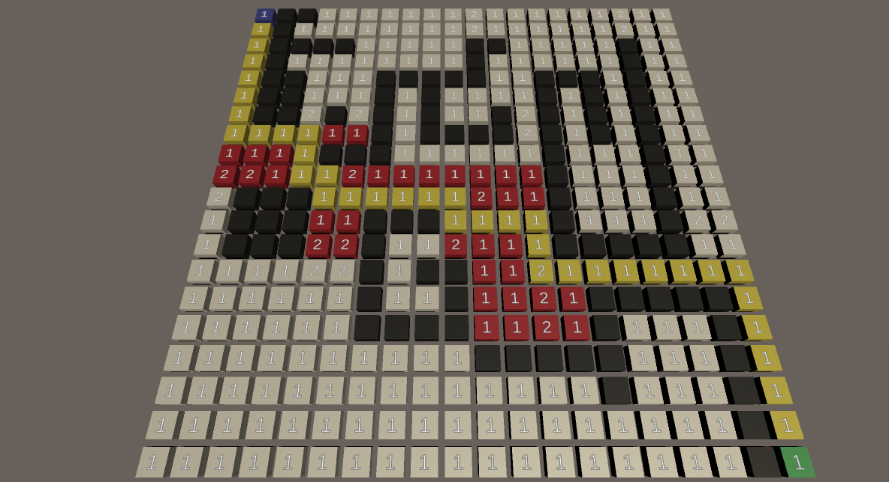
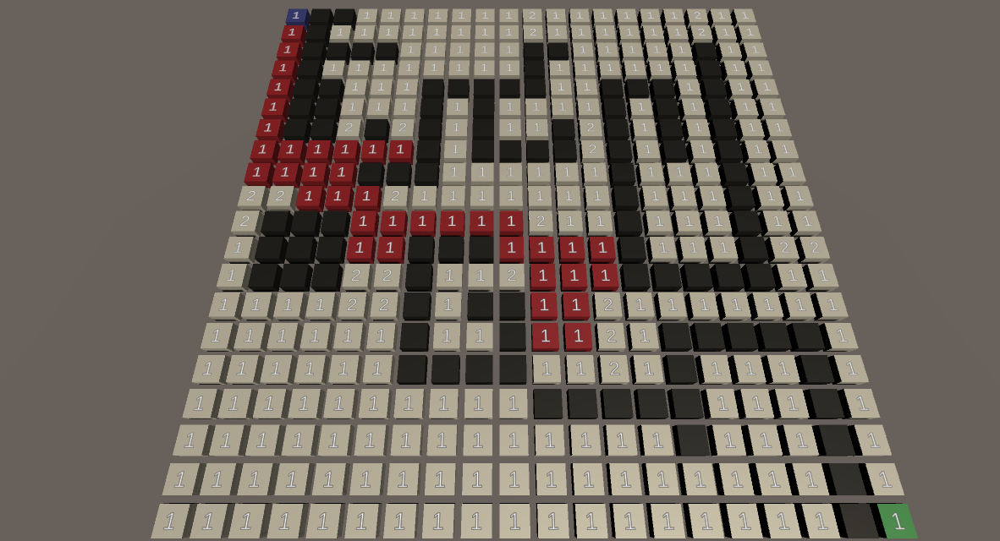
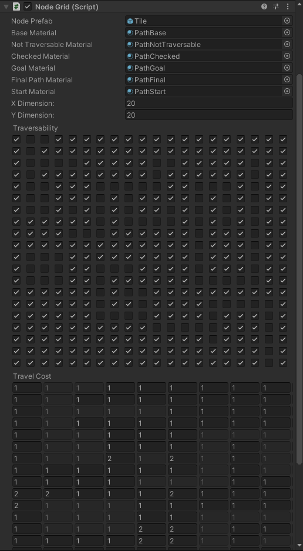

A project to show off some of the common path finding algorithms.
This is a project to implement the common path finding algorithms. This includes breadth first search, depth first search, Dijkstra's, and A* pathfinding. The grid shows the progress of the algorithm as it takes each step in figuring out which path to take. For this project I will just talk about the A* path finding algorithm implementation. To start we take the starting node and look at each of the connected nodes. We make sure we aren't at the end node, and then we take a look at whether we can travel to the node (might not be traversable), the cost to travel to, and a heuristic, we can see if a node is worth checking.
if(nodeToCheck.Traversable && nodeToCheck.TravelCost + currentNode.CostToStart < nodeToCheck.CostToStart)
We always check the next node doesn't have a shorter path to start than a path we have already checked. Since if the path to the next node is longer than a path we already found to it, it can never be the fastest path. If we find that it is worth checking, we update the cost to start for the node and we add it to a priority queue. The value to determine the priority in the queue is the cost to start added to a heuristic. Because of the simple nature of this, the heuristic is just the distance from the node we are checking and the end node. The node size makes this a pretty good heuristic when taking into account the travel cost of the tiles. Once we have went through the four adjacent tiles and anything has been added to the priority queue that should be, we just loop and try again. Instead of using the starting node, we will just grab the best node from the priority queue and check that one. We continue this until we hit the end node.

To test the algorithms I created a custom editor that allows you to set attributes for the grid. You can set tiles as unpassable or add a cost to travel for each tile to modify what path is fastest.
